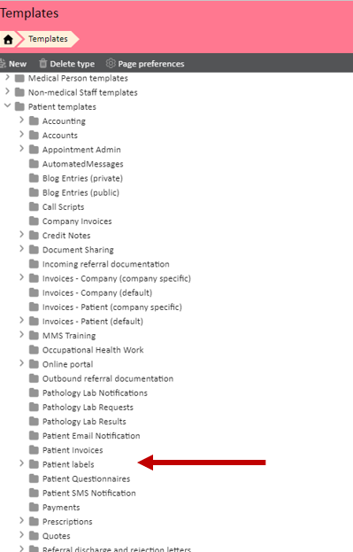
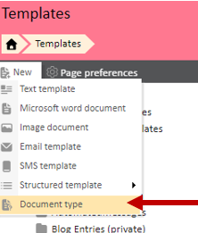
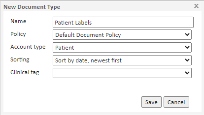
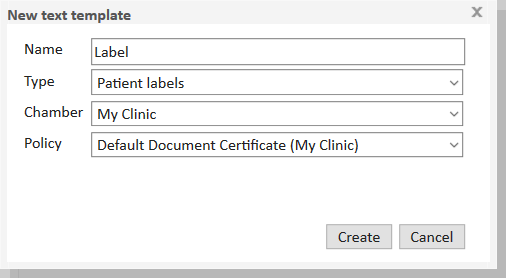
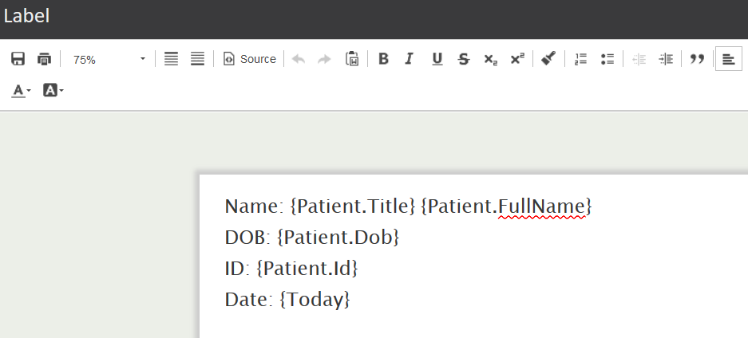
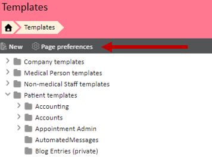
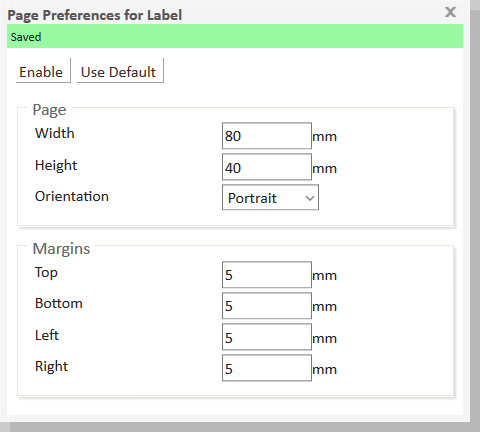
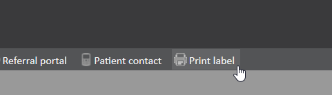

Meddbase is capable of pulling through patient information, using template codes, and print labels with the necessary information contained avoiding the need to copy and paste information separately when populating labels.
Labels can also be used in Pathology, where they will be printed and stuck to a specimen before being sent off.
For information on template codes, please take a look at this article: Templates & Documents - An overview
This article will guide you through the process of creating a template for labels, and how to print these from inside a patient record.
Navigate to the Templates tile. Start Page> Templates
Within 'Patient Templates' you should have a folder named 'Patient Labels'.

If you can't see this folder, then create a new document type called Patient labels with an account type of Patient. To create a new document type click 'New' and the 'Document Type'.


Click New > Text template to begin creating a template. Set the type to 'Patient labels'.

Click Create, then Open to go to the template editor. Add the information to want to include on your label.

Save and close your work, then click Page preferences to set the width and height of the template.

The width and height will need to match the width and height of your labels.

Close the page preferences window, then test that printing works by navigating to a patient record and clicking Print label.
